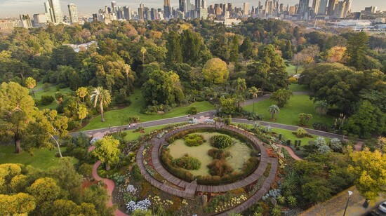
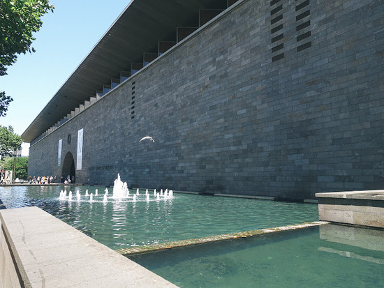

ロッド・レーバー・アリーナ
（Rod Laver Arena）
オーストラリア・ビクトリア州・メルボルンのメルボルン・パークにある屋内競技場。2000年1月にオーストラリアの伝説的プレーヤー、ロッド・レーバーを称えて、現在の名称になった。収容人数は最大14,820人。全豪オープンのセンターコートでもある。

王立植物園
ビクトリア時代に造園された美しい庭園であり、都会の真ん中で、珍しい植物を育成している教育施設です。1846 年に開園された 38 ヘクタールの庭園には、珍しい植物や、絶滅が危惧されているオーストラリア原産の植物を含む 5 万種を超える植物が育てられています。園内の庭園、林、温室のなかを散策すれば、植物の世界の驚くべき多様性について学ぶことができるでしょう。オーストラリアの先住民族や、興味深い生態系、歴史的な工芸品などについての知識も増えるでしょう。

ビクトリア国立美術館
ビクトリア国立美術館は、1861年にオープンした、オーストラリア最古の美術館です。市民からは、NGVと呼ばれ、親しまれています。ビクトリア州のアート特区（芸術指定地区）の中心的な存在で、常設コレクションは入場無料。誰でも気軽に鑑賞することができます。
ユーレカタワー・スカイデッキ88
ユーレカタワーはオーストラリアで2番目に高い建物で、高さはなんと297メートル！ユーレカタワーの最上階（88階）にある展望台「ユーレカスカイデッキ88」は南半球で一番高い展望台で、メルボルンの街を360°見渡すことができます。もっとスリルが欲しい方は、タワー最上階の側面からせり出たガラス張りのグラスキューブに乗ってみるのもおすすめ。297メートルの高さをより体感することができます。